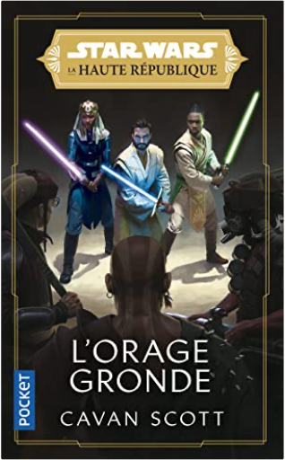
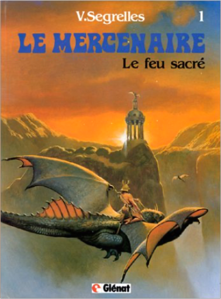

Books
Movies
Albums
Videogames
Games
BD
BD Camille
Blu-ray
Business
Camille
Comics
Cooking
Lego
Manga
Pauline
Photography
Star Wars
T'choupi
Travel
TV Shows
Un livre dont vous êtes le héro
Vinyl
Walt Disney
71
72
73
74
75
un merveilleux automne
mes jolis saisons
à qui est ce derrière ?
thorsten saleina, frédérique fraisse
star wars, tome 39 : le nouvel ordre jedi, partie 1, vecteur prime
r.a. salvatore
4
star wars, tome 49 : épisode II, l'attaque des clones
r.a. salvatore
4.5
La chambre des merveilles
Julien Sandrel
Les étincelles
Julien Sandrel
flashforward
robert j. sawyer
3
mon petit poney : contes pour enfants sages
geneviève schurer

Star Wars, La Haute République, tome 2 : L'orage gronde
Cavan Scott
au galop ! : le premier livre qui bouge...
rufus butler seder
un conquérant sous la mer, henri-germain delauze
alain dunoyer de segonzac

le mercenaire, tome 1
segrelles
5
71
72
73
74
75


 Made with Delicious Library Made with Delicious Library
Made with Delicious Library Made with Delicious Library